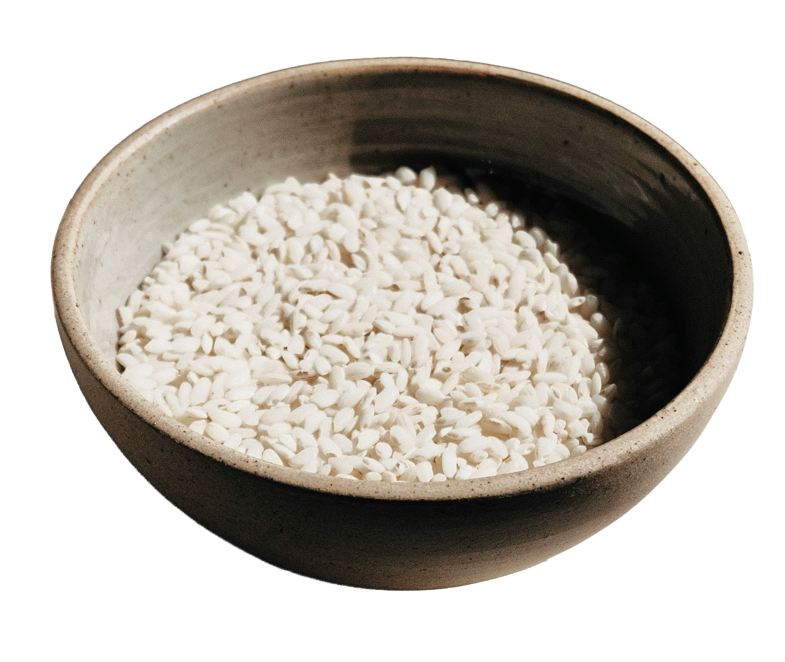

Umami & Koji
L'essence même de la cuisine japonaise réside dans une base d'umami prononcée. Nous nous approvisionnons auprès de producteurs locaux afin de vous proposer des ingrédients dignes d'un restaurant Michelin, qui enveloppent le palais d'une douce chaleur. Nous utilisons une grande variété d'ingrédients, en mettant l'accent sur le koji, un riz fermenté japonais, afin de faire ressortir le caractère raffiné de nos plats.
En plus d'utiliser le koji dans nos plats, nous l'intégrons également dans nos boissons, en associant les saveurs intenses de la cuisine japonaise à des rafraîchissements sucrés à base d'amazake.
